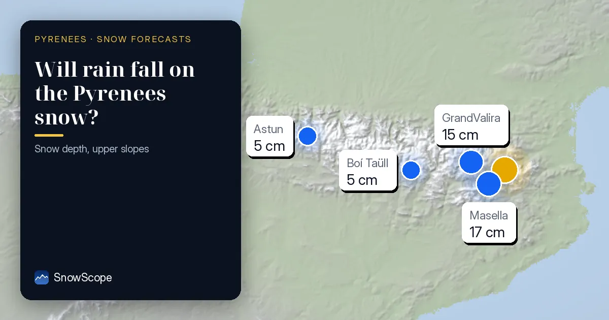
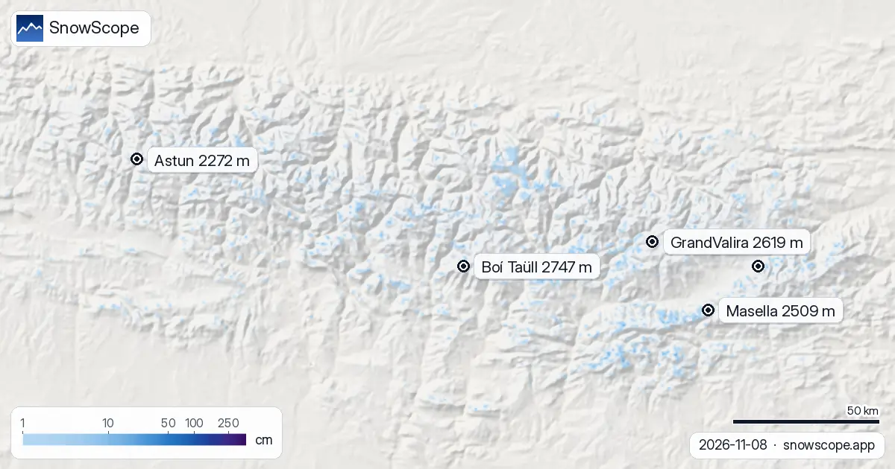

Will rain fall on the Pyrenees snow? Freezing level 3400m
Rain will fall on the snowpack across the Pyrenees from 09 to 11 November. The freezing level (where air temperature crosses 0 °C) reaches 3400m to 3600m during the warmest hours—well above every lift top—meaning rain, not snow, falls on the mountains.
See the live snow forecast for Boí Taüll in the SnowScope appSnow depth, powder alerts and the 3D map, free.
What freezing level 3400m means for each resort
The freezing level swings up and down through each day: coolest at dawn, warmest in early afternoon. The snow line—where falling rain turns to snow—sits about 300 metres lower. At Boí Taüll (2747 m top), the freezing level on 09 November ranges from 3010m to 3430m, so the snow line reaches 3100m at midday. Everything below that gets rain.
GrandValira (2619 m top) sees even higher freezing levels: 3110m to 3840m. All major resorts across the Pyrenees sit below the snow line these next days. Every mountain we track will see rain on snow all three days.
| Resort | Snow depth | New snow, 72 h | Coming, next days | Top |
|---|---|---|---|---|
| Boí Taüll | 5 cm | 0 cm | 3 cm | 2,747 m |
| GrandValira | 15 cm | 0 cm | 0 cm | 2,619 m |
| Masella | 17 cm | 0 cm | 0 cm | 2,509 m |
| Espace Cambre d'Aze | 21 cm | 0 cm | 0 cm | 2,377 m |
| Astun | 5 cm | 0 cm | 0 cm | 2,272 m |

The freezing level sinks, but stays high
09 November is the worst day: the freezing level reaches 3840m across the region (a range of 2940m to 3840m). By 10 November, the minimum drops to 2710m, but the maximum lingers at 3500m. On 11 November, the floor sinks further to 2610m, and the ceiling to 3520m.
This trend is good news if you wait until late in the week, but that does not help: rain-on-snow risk does not shift. Every day through 11 November brings precipitation falling on snow somewhere on the mountain.
Why this matters: thin early-season snow
The Pyrenees snowpack is fragile. Boí Taüll sits at 5 cm on upper slopes. GrandValira has 15 cm. Most resorts report depths of 5–20 cm. Snow-covered area has already shrunk from 2670 km2 (06 November) to 1550 km2 (08 November).
When rain falls on thin snow, it adds weight and water, softening the layer below and sometimes triggering avalanche risk. We forecast snow-covered area dropping to 390 km2 by 11 November. If you plan to ski off-piste, check the official avalanche bulletin.
Where the rain comes from
Most precipitation arrives on 12–13 November, but front-runners move in on 09–10 November. At Baqueira-Beret and Saint-Lary—both around 2510–2515 m—rain totals for the next five days (09–13 November) will be 43 mm and 55 mm respectively.
Baqueira-Beret will see only 1 mm to 3 mm per day until 12 November; Saint-Lary gets 6 mm to 12 mm on 09–10 November. The volume seems small, but it falls as rain—not snow—at elevation, so it concentrates the water damage on a thin base.
When to expect the shift
After 11 November, conditions change. The freezing level drops sharply, and precipitation volume swells. That means less rain hits high elevations, and the snowpack will stabilize.
Early-season snow is never ideal for skiing—it clings to rocks, compacts quickly, turns icy. Rain-on-snow complicates that by adding a wet layer. By 12 November onwards, that wet layer will freeze into a crust. The worst rain-on-snow window closes.
Tips for skiers
- Avoid steep off-piste terrain from 09–11 November. Rain on a thin snowpack raises avalanche risk. Check the official avalanche bulletin before you go.
- Stick to groomed, patrolled slopes if you are skiing during these three days. The ski patrol has the most up-to-date information on snow stability.
- Plan your timing around the freezing level. Early morning is safer than midday because the freezing level is lower (colder air).
- After 11 November, conditions will be more stable but icy. The rain-on-snow window closes, and the pack refreezes.
- Use SnowScope to track when snow disappears from your chosen resort. Snow-covered area in the region is forecast to drop sharply; your local terrain will follow that pattern.
About these numbers
Resort snow depths are the deepest snow on the resort's upper slopes from the SnowScope snow model (about 1 km, run of 8 November); they are estimates for an area, not a measurement at one point. Station values are measurements on the date shown. Forecasts can change. Always read the official avalanche bulletin before going off-piste.
Official avalanche bulletins: Météo-France / Meteocat / AEMET
Cite this report
For research, teaching or the press: the numbers and charts are free to reuse under CC BY 4.0 with this citation.
SnowScope (2026), Will rain fall on the Pyrenees snow? Freezing level 3400m, https://snowscope.app/blog/en/2026/11/pyrenees-freezing-level-snow-line-8-november-2026.html, accessed 2026-11-08
SnowScope (Atlas Labs). (2026, November 8). Will rain fall on the Pyrenees snow? Freezing level 3400m. SnowScope snow reports. https://snowscope.app/blog/en/2026/11/pyrenees-freezing-level-snow-line-8-november-2026.html
BibTeX
@misc{snowscope2026pyreneesfreezinglevelsno,
author = {{SnowScope (Atlas Labs)}},
title = {Will rain fall on the Pyrenees snow? Freezing level 3400m},
year = {2026},
month = nov,
howpublished = {\url{https://snowscope.app/blog/en/2026/11/pyrenees-freezing-level-snow-line-8-november-2026.html}},
note = {Published 2026-11-08 20:51 UTC; accessed 2026-11-08}
}· CC BY 4.0 · Methods, data and tools →
Boí Taüll: snow and temperature by height, this winter vs last (tools) →
Follow Boí Taüll
Free: a message when fresh snow is coming, and the forecast every morning.
More snow reports

How to spend one good day at Luz-Ardiden, a small ski area above Luz-Saint-Sauveur in the Hautes-Pyrénées: the road, the two sectors, the snow of 46 past winters and which weeks to choose.

Pyrenees day passes from 46 EUR: six resorts in France, Spain and Andorra compared by price, then by the snow they usually have in December and January.

Baqueira-Beret sits in the Val d'Aran, on the Atlantic side of the Pyrenees. What that means for its snow, tested with 46 past winters against La Molina, and when to go.